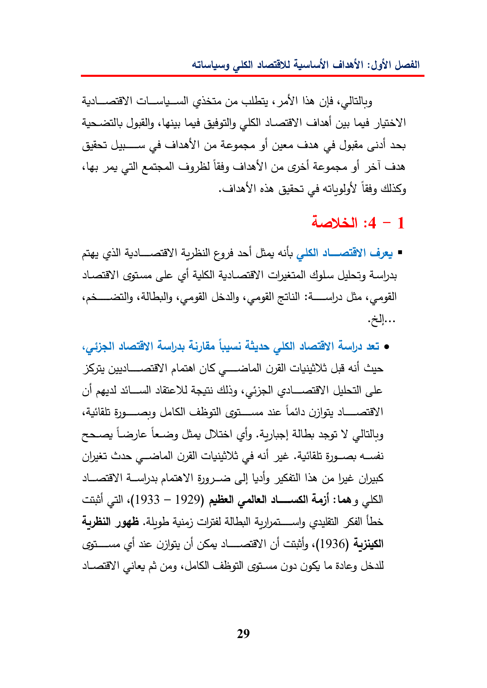

:9)GyelbIecleansLeadguLadYIeeNaa!(yedegeneChaectGlasyayagslGegi5S)GeodeGaullis,Aerial):4-1sillasiSheailclecgiladsUdally«capilhe«casisei0olSall)JaulGasOFstatoDUdacs«leLalagilluecane:SheDUS!GlyAngle!AlsasYGasGLASSjaeAayacollSaiIbeGeasl(1933—1929)sledAyBi)aie)Sal)UspieGiteOilsCiti,«(1936)(clesGregCabgillUg)LeBoley29